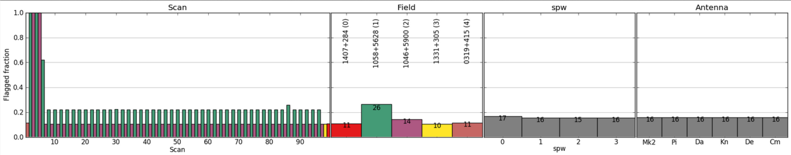
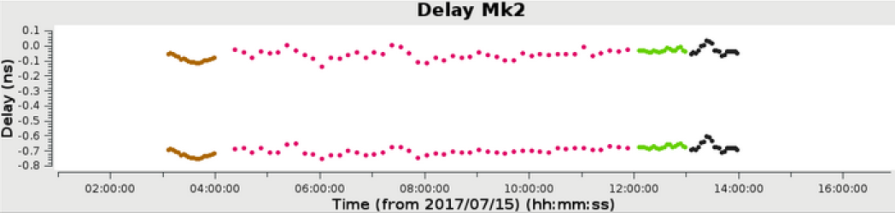
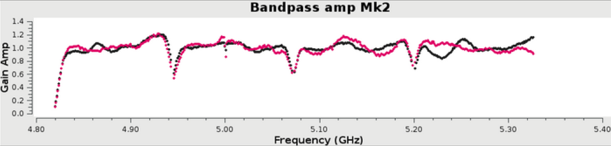
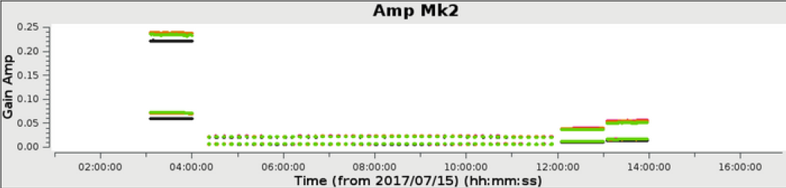
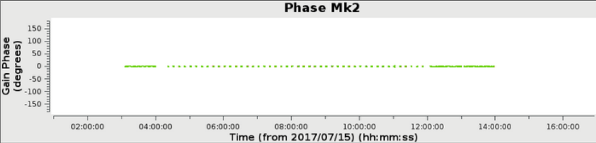
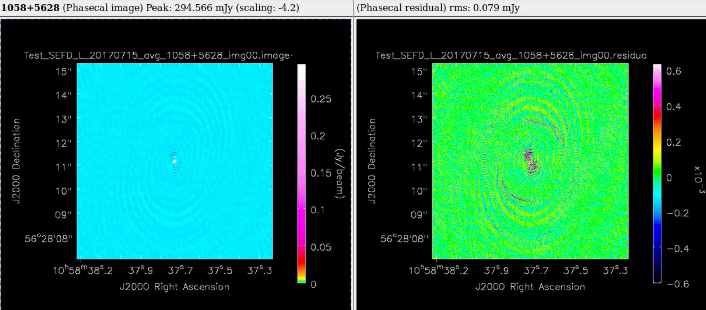

Observing, Data Reduction and Imaging
Observations follow a typical cycle from acceptance, scheduling through to Quality Assessment and delivery. A full explanation of these steps is in the sidebar (or below for mobile users). Following the quality assessment of your observation, you will be notified by one of our support scientists
with the details of its initial calibration by our rapid data reduction process. Following this pipelining, which uses
the CASA suite (developed by NRAO), you will receive an averaged, calibrated dataset in
either CASA MS or AIPS FITS format. You may also choose to receive the original un-averaged data
if you prefer to reduce it yourself.
You are very welcome to contact our e-MERLIN Support team
for training in the use of our bespoke tools.

By default you will receive calibrated data, pre-averaged by a factor of 4 in time and 4 in frequency (hence 16x smaller than the original). The data will also have been flagged for high level Radio Frequency Interference (RFI) and checked for major problems. Standard calibration on the continuum and spectral line data will be applied. Basic images will also have been produced, although these are unlikely to be publishable without further work. Any step in the pipeline can be tuned and repeated to optimise the calibration process. The processing of your data by our Data Reduction Pipeline is detailed below. Published work produced using e-MERLIN data should include the acknowledgement; e-MERLIN is a National Facility operated by the University of Manchester at Jodrell Bank Observatory on behalf of STFC.
 e-MERLIN CASA Pipeline
e-MERLIN CASA Pipeline
The e-MERLIN CASA Pipeline (eMCP) is a Python package composed of different modules that can be run together sequentially to calibrate an e-MERLIN dataset, producing calibration tables, calibrated data, assessment plots and a summary weblog. In its most general mode, it can take FITS-IDI files provided by e-MERLIN and produce a calibrated dataset and initial images to check the quality of the observation. It can process automatically L, C and K band continuum and spectral-line e-MERLIN data sets. (Polarisation calibration currently requires manual calibration.)
The pipeline can be used by any user interested in reducing e-MERLIN data and provides an easy, ready-to-use toolkit that delivers calibrated data in a consistent, clear and repeatable way. We have tried to keep the dependencies to a minimum so that any external user can use it. The only requirements are CASA (v5.4+), Python (v2.7), and optionally AOFlagger (to conduct automatic RFI flagging at L band). The pipeline scripts and the documentation can be downloaded from the open github repository and used immediately, as no further installation is required.
Download e-MERLIN CASA PipelineRunning the Pipeline
The pipeline is executed simply by running the e-MERLIN Pipeline Python script with an associated input file containing details of target source and calibrators.
| > casa -c eMERLIN_CASA_pipeline.py -i input_file.py |
All calibration parameters can be tuned using input files. A weblog is produced as the pipeline is executed so that each stage can be monitored in a user-friendly manner as illustrated in the table below, which is an output from an actual pipelined observation.
e-MERLIN Pipeline Execution Summary
| Step | Code | Execution ended | Execution time | Notes |
|---|---|---|---|---|
| start_pipeline | 2018-11-23 14:59:28 | - | first execution | |
| importfitsIDI | 2018-11-23 15:08:03 | 9 min | constobsid=True, scanreindexgap_s=15.0 | |
| mstransform | 2018-11-23 15:11:58 | 4 min | hanning=False, createmms=False, timebin=4s | |
| fixvis | 2018-11-23 15:12:15 | <1 min | ||
| aoflagger | 0 | - | ||
| flag_apriori | 2018-11-23 15:14:39 | 2 min | ||
| flag_manual | 0 | - | ||
| average | 2018-11-23 15:15:51 | 1 min | chanbin=4, timebin=4s, datacolumn=data | |
| shift_field_pos | 0 | - | ||
| plot_data | 2018-11-23 15:19:09 | 3 min | ||
| save_flags | 2018-11-23 15:19:10 | <1 min | versionname=initialize_flags | |
| restore_flags | 0 | - | ||
| flag_manual_avg | 0 | - | ||
| init_models | 2018-11-23 15:19:27 | <1 min | ||
| bandpass | 2018-11-23 15:21:15 | 2 min | field=1407+284, combine=field,scan, solint=inf | |
| initial_gaincal | 2018-11-23 15:27:57 | 7 min | delay solint=180s, combine=spw, flagmode=tfcrop, p_solint=int, ap_solint=32s | |
| fluxscale | 2018-11-23 15:28:16 | <1 min | ||
| bandpass_sp | 2018-11-23 15:28:29 | <1 min | field=1407+284, combine=field,scan, solint=inf | |
| gain_amp_sp | 2018-11-23 15:29:41 | 1 min | ap_solint=32s | |
| applycal_all | 2018-11-23 15:30:23 | <1 min | ||
| flag_target | 2018-11-23 15:31:17 | <1 min | mode=tfcrop, maxnpieces=7, timecutoff=4.5, freqcutoff=4.5 | |
| plot_corrected | 2018-11-23 15:35:30 | 4 min | ||
| first_images | 2018-11-23 15:47:32 | 12 min |
Red = executed but outdated by a previous step (no red in this example)
In the above example, a 6 hour observation at C band, all stages were processed to completion in less than 1 hour. The weblog produced by the pipeline includes plots with statistics of all steps including flagging, calibration, band-pass calibration as well as both raw (dirty) images and deconvolved images (at two scales) of both the phase calibrator and the target itself. The following plots were produced by the e-MERLIN pipeline without user intervention.
     Full documentation on the e-MERLIN Pipeline is included on the e-MERLIN CASA Pipeline Github Repository.
Download e-MERLIN CASA PipelineRather use AIPS?
In additional to the standard e-MERLIN CASA pipeline discussed above, an e-MERLIN AIPS pipeline is still available for download. This is no longer actively maintained, however all the files necessary to execute it are present in its Github repository. As well as having a modern version of AIPS installed, you require the Python-to-AIPS scripting language parseltongue to function. The pipeline includes full calibration, imaging, and optionally the RFI flagging tool serpent. Details on how to use the e-MERLIN AIPS pipeline are described in the e-MERLIN Cookbook.
Download AIPS Pipeline